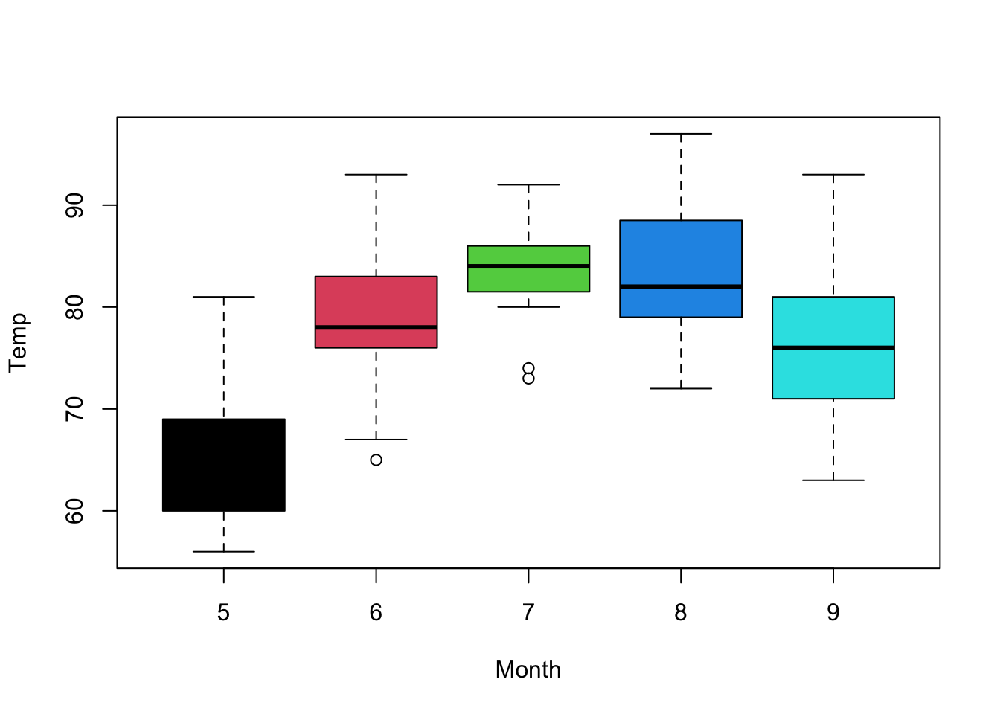

Hello Class, Professor, and TA. Below is a quick exercise using code chunks in R. We will be completing a linear Regression using the “airquality” Dataset preloaded in R & R Studio
# Install and Load Necessary Packages and Libraries# Install and load these required packages be removing the # sign. #install.packages("caret")library(caret)
── Conflicts ────────────────────────────────────────── tidyverse_conflicts() ──
✖ dplyr::filter() masks stats::filter()
✖ dplyr::lag() masks stats::lag()
✖ purrr::lift() masks caret::lift()
ℹ Use the conflicted package (<http://conflicted.r-lib.org/>) to force all conflicts to become errors
Basic Statistical Analysis Steps
# This is the syntax we use to load the "airquality" datasetdata(airquality)# Call a summary of the datasummary(airquality)
Ozone Solar.R Wind Temp
Min. : 1.00 Min. : 7.0 Min. : 1.700 Min. :56.00
1st Qu.: 18.00 1st Qu.:115.8 1st Qu.: 7.400 1st Qu.:72.00
Median : 31.50 Median :205.0 Median : 9.700 Median :79.00
Mean : 42.13 Mean :185.9 Mean : 9.958 Mean :77.88
3rd Qu.: 63.25 3rd Qu.:258.8 3rd Qu.:11.500 3rd Qu.:85.00
Max. :168.00 Max. :334.0 Max. :20.700 Max. :97.00
NA's :37 NA's :7
Month Day
Min. :5.000 Min. : 1.0
1st Qu.:6.000 1st Qu.: 8.0
Median :7.000 Median :16.0
Mean :6.993 Mean :15.8
3rd Qu.:8.000 3rd Qu.:23.0
Max. :9.000 Max. :31.0
# Check the structure of the datastr(airquality)
'data.frame': 153 obs. of 6 variables:
$ Ozone : int 41 36 12 18 NA 28 23 19 8 NA ...
$ Solar.R: int 190 118 149 313 NA NA 299 99 19 194 ...
$ Wind : num 7.4 8 12.6 11.5 14.3 14.9 8.6 13.8 20.1 8.6 ...
$ Temp : int 67 72 74 62 56 66 65 59 61 69 ...
$ Month : int 5 5 5 5 5 5 5 5 5 5 ...
$ Day : int 1 2 3 4 5 6 7 8 9 10 ...
# We see there are some NA values, lets print information about the missing values so we can replacement themMissing_Values_before_Replacement <- (colSums(is.na(airquality)))print(Missing_Values_before_Replacement)
Ozone Solar.R Wind Temp Month Day
37 7 0 0 0 0
# Now that we have seen all the NA response, we will replace them with the mean for each variableairquality <- airquality %>%mutate_all(~ifelse(is.na(.), mean(., na.rm =TRUE), .))# Check observations for NA responses after our replacement with the meanMissing_values_after_replacement <- (colSums(is.na(airquality)))print(Missing_values_after_replacement)
Ozone Solar.R Wind Temp Month Day
0 0 0 0 0 0
# Set a moderate seed for reproducibilityset.seed(123)# Now we will split the data into a training and testing datasetssplit_index <-createDataPartition(airquality$Temp, p =0.7, list =FALSE)train_data <- airquality[split_index, ]test_data <- airquality[-split_index, ]
Simple Linear Regression Example
# This is how we create a simple linear regression model using the training datalm_model <-lm(Temp ~ Ozone, data = train_data)# This syntax allows us to make predictions based on the training datatrain_predictions <-predict(lm_model, newdata = train_data)# Calculate Mean Square Prediction Error (MSPE) for the training model to gauge how well it predictsmspe_train <-mean((train_data$Temp - train_predictions)^2)print(paste("MSPE for Training Model:", mspe_train))
[1] "MSPE for Training Model: 51.7474037510277"
Predictions on Testing Set
# Predict the target variable on the testing settest_predictions <-predict(lm_model, newdata = test_data)# Calculate MSPE for the test modelmspe_test <-mean((test_data$Temp - test_predictions)^2)print(paste("MSPE for Test Model:", mspe_test))
[1] "MSPE for Test Model: 67.4051703292027"
Visualization
# As an extra, here is a box plot of Temperature by Monthwith(airquality, boxplot(Temp ~ Month, col =c(1,2,3,4,5)))

# Lastly, here is a Scatterplot of Ozone vs. Temperaturewith(airquality, plot(Ozone ~ Temp))